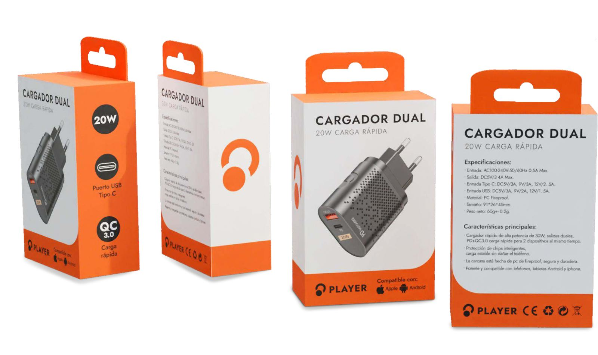

01 / 03
DISEÑO DE PERSONAJES · CÓMIC · ILUSTRACIÓN DIGITAL
ILUSTRACIÓN
Personajes, escenas
y relatos visuales.
en asunción / paraguay y en todas partes
PORTFOLIO PERSONAL / 2026
DISEÑADOR
VISUAL SÉNIOR
SELECCIÓN / 2021—2026
Una selección de identidades, personajes e historias en movimiento.
Personajes, escenas
y relatos visuales.
Nominado al Premio Tatakua 2022.
Escenas, personajes y cómics.
Retratos, criaturas y personajes.
Marcas con carácter,
coherencia y propósito.
Identidad aniversario y aplicaciones.

Identidad visual y packaging.
Marca, Melvi y comunicación.
Ideas que toman forma
a través del movimiento.
Personajes y animación para spot de TV.
Ilustración y animación a mano.
UN POCO
SOBRE MÍ
DISEÑADOR VISUAL SÉNIOR
Diseño sistemas visuales, construyo personajes y exploro nuevas formas de contar historias.
Trabajo en diseño visual desde 2015. Mi experiencia combina branding, ilustración, diseño editorial, motion y producción audiovisual. Actualmente desarrollo proyectos para marcas y campañas desde Periferia Comunicación, mientras profundizo en dirección de arte y nuevas tecnologías creativas.
Inicio de mi recorrido profesional en diseño y comunicación visual.
Tecnicatura en Diseño Gráfico (Universidad Columbia del Paraguay) y Artista Secuencial (Art Studium).
Diseño gráfico y packaging en Electropar S.A.
Identidad, personaje, campañas y web para Todegol.
Diseñador gráfico e ilustrador en Periferia Comunicación: identidad, campañas, ilustración, motion e IA generativa.